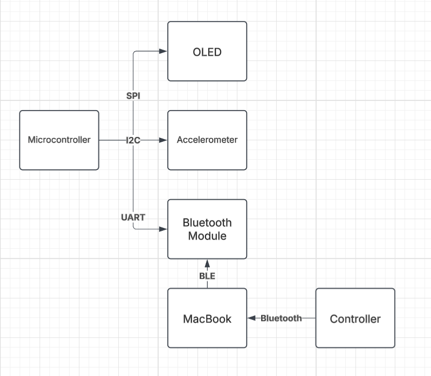

About the Project
Mind Invaders is a retro arcade game inspired by Space Invaders. Its name is an homage to an idea that never came to fruition. However, it developed into a complete project that demonstrates the fundamental concepts learned throughout the EEC 172 Embedded Systems course. Mind Invaders is different from its predecessor in three primary ways. The first is the game has two input methods in an Xbox controller and the CC3200 Launchpad accelerometer. The second is a power management system where different weapons consume power and the player loses if they run out of power. The final addition is a minigame the player can enter where they control the character with the Launchpad accelerometer and have to dodge randomly generated red circles for ten seconds to receive a reward.
Hardware
The primary hardware components are the CC3200 Launchpad with its built-in accelerometer, an OLED display, Xbox controller, and a bluetooth module that helps connect the Xbox controller.
Project Demo
Project Report
Design
The game starts at the start game state. Here you have a screen which prompts the user to press X to go to the controls or A to start the game. Once at controls you can press B to go back to the start. Once you press A you enter the main game state. Here the game either transitions to the mingame by shooting a purple cube that pops up or to the post game screen. That transition can happen from the user running out of power or running out of lives. From the end game screen you can either navigate to the start again by pressing A, or go to the leaderboard state by pressing X. The leaderboard state allows you to view the top 4 scores as well as enter your name and submit a score. If your score was high enough it will be immediately available on the leaderboard. From the leaderboard state you can then go back to the post game screen.
The CC3200 is the center of the embedded system. The OLED connects to the Launchpad through SPI and the accelerometer connects with I2C similar to how these things were done in previous labs. In addition to this we connect the HM-10 bluetooth module to the CC3200 with UART. The HM-10 connects to a MacBook through Bluetooth Low Energy and the Xbox controller connects to the MacBook via bluetooth. A python script using pygame detects controller input and through this bluetooth connection the user input can be incorporated into the code written in CCS.
Challenges
Implementation of the game itself went quite smoothly. With the help of some prior game development experience we were able to implement all the core gameplay mechanics without encountering too many difficulties. However, there was one significant challenge we encountered. The first iteration of the game implementation was utilizing interrupts to detect user input and this proved to be an ineffective strategy. The game was far too unresponsive with this implementation. Our solution was to refactor the code to track game state and in the main while loop continuously check what the most recent button input from the user was. Based on that input, we can change state in the main loop and avoid using interrupts altogether. This had a major improvement on game performance.
The second major challenge was implementing the controller. We had an issue with the Xbox controller having delayed inputs. This was resolved when refactoring the code to only check the most recent button press and change states in main accordingly. The controller input proved to be a major bottleneck that, once solved, a great deal of progress was made in a short period of time.
We had some challenges with integrating AWS in our project. In this case, AI tools proved to be incredibly useful as they helped throughout the debugging process and were capable of providing mostly working GET and POST functions as well as the lambda function we use to parse incoming commands to the DynamoDB table.
Future Work
The major feature that we would have liked to implement is some form of EEG headset. Originally, we had intended to have a headset influence the strength of the player’s abilities and influence how power consumption happens during gameplay. The EEG headset we had access to was too old and cheap to provide reliable data that could be incorporated in a meaningful way. For some context, it assumed the user was brain dead around half of the time. Due to budget constraints, we could not purchase a headset of good enough quality to incorporate.
Scaling difficulty as the player’s score increases is a reasonable thing to continue working on. There is a constraint with how fast the OLED can update the screen if too many pixels need to be changed. However, there could be unique kinds of enemies with varying speeds and health values that increase the game difficulty. In addition to this, game feel could be improved by experimenting with values through a series of play testing experiments. Reducing the amount of pixels the player, enemies, and bullet moves while simultaneously increasing the refresh rate of the screen improves game feel, but we pushed this as far as we could with the hardware we have access to.
Bill of Materials
FROM LAB (free):
- CC3200 Launchpad
- OLED
Purchasable online:
- Xbox Controller ($20-25)
- HM-10 Bluetooth Module ($10)